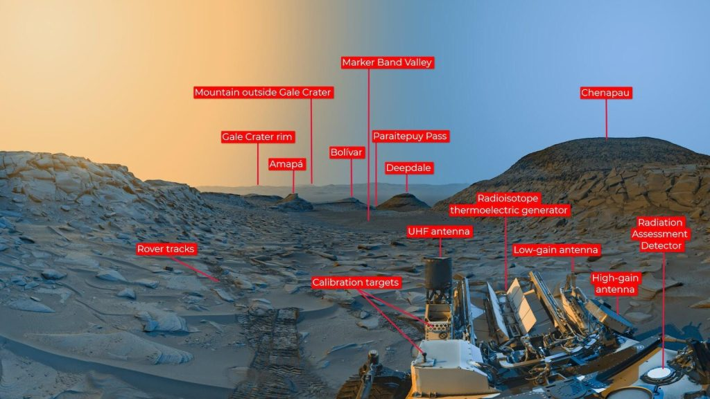
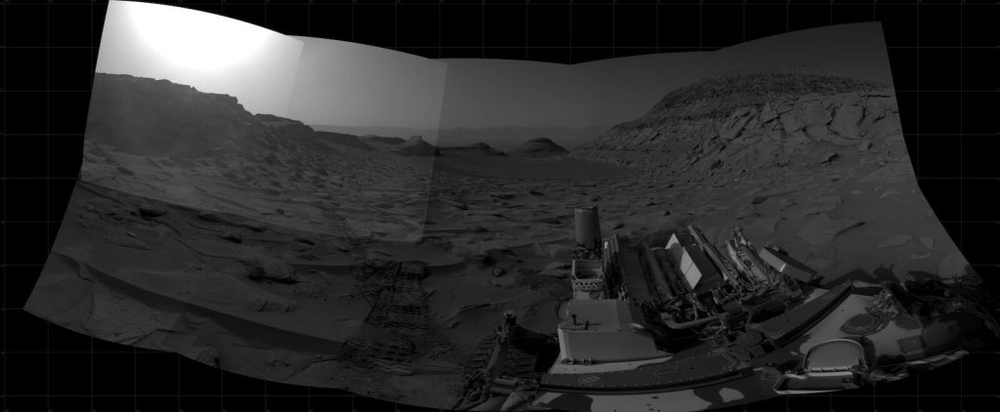
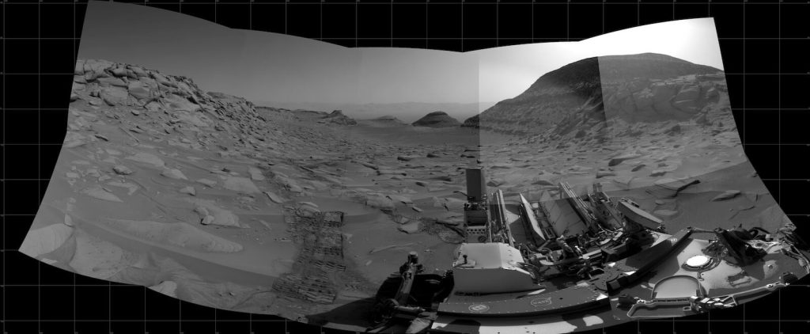

ဒီပုံမှာ မြင်တွေ့ရတဲ့ ချိုင့်ဝှမ်းကြီး ကတော့ Marker Band Valley လို့ အမည်ပေးထားတဲ့ ချိုင့်ဝှမ်းကြီးပဲ ဖြစ်ပါတယ်။ ဒီ ချိုင့်ဝှမ်းဟာ ၂၀၁၂ ကတဲက စလို့ Curiosity Rover သုတေသန ပြု လေ့လာနေခဲ့တဲ့ Gale Crater ဥက္ကာတွင်း ကြီးထဲမှာ ဖြစ်ပေါ်နေတဲ့ ချိုင့်ဝှမ်းတစ်ခု ဖြစ်ပါတယ်။
အခု ဓါတ်ပုံဟာ Curiosity Rover ကနေပြီး သူဖြတ်သန်းလာခဲ့တဲ့ လမ်းကြောင်းကို နောက်ပြန်လှည့်ပြီး ဓါတ်ပုံ ရိုက်ထားတာ ဖြစ်ပါတယ်။ ပုံမှာ အဝေးက Marker Band Valley ချိုင့်ဝှမ်းကို မြင်တွေ့ရမှာ ဖြစ်ပါတယ်။

ဒီပုံမှာ ဘယ်ဖက်ခြမ်းက လိမ္မော်ရောင် သန်းနေတဲ့ ကောင်းကင်ဟာ ညနေ နေဝင်ရီ တရော ဆည်းဆာတောက်ချိန် ဖြစ်ပြီး ဘာဖက်က အပြာရောင် ကောင်းကင်ကတော့ မနက် နေထွက်ချိန် အရုဏ်တက်ချိန်ပဲ မိုးကောင်းကင် ဖြစ်ပါတယ်။
ဒီ ဓါတ်ပုံဟာ မူလက ရောင်စုံ ဓါတ်ပုံ မဟုတ်ပဲ အဖြူအမည်း ဓါတ်ပုံ ဖြစ်ပါတယ်။ ဒီ ဓါတ်ပုံကို မနက် နေထွက်ချိန်နဲ့ ညနေ နေဝင်ချိန် ရိုက်ကူးထားတဲ့ အဖြူအမည်း ဓါတ်ပုံ နှစ်ပုံကို ပေါင်းစပ်ပြီး အရောင် ထည့်သွင်းထားခြင်း ဖြစ်ပါတယ်။

မူရင်း ဓါတ်ပုံ တစ်ပုံခြင်းစီရဖို့ အချိန် စုစုပေါင်း ၇.၅ မိနစ် ကြာအောင် ရိုက်ကူး ရပါတယ်။ မူရင်း မြင်ကွင်းကျယ် panoramic ဓါတ်ပုံဟာ သာမန်အရွယ် ဓါတ်ပုံ ၅ ပုံကို ပေါင်းစပ် ဖန်တီးထားတာ ဖြစ်ပါတယ်။
ဒီဓါတ်ပုံတွေ ရိုက်ကူးချိန်မှာ မာစ်ဂြိုဟ်ပေါ်မှာ ဆောင်းတွင်းကာလ ကျရောက်နေချိန်လဲ ဖြစ်ပါတယ်။

Ref: Curiosity Mars rover captures morning and afternoon images at site of ancient lake | Sky and Night Magazine